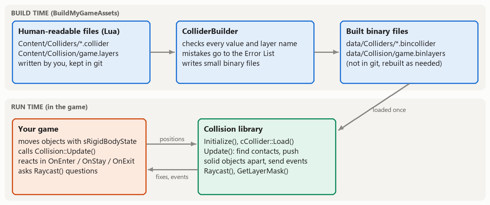
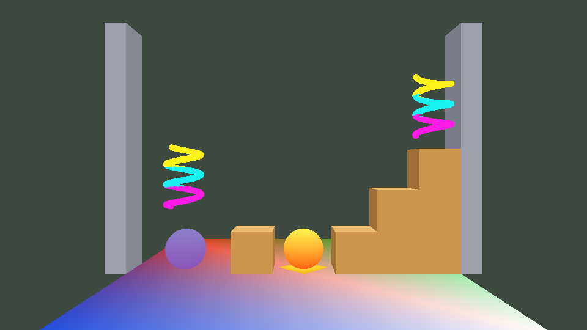
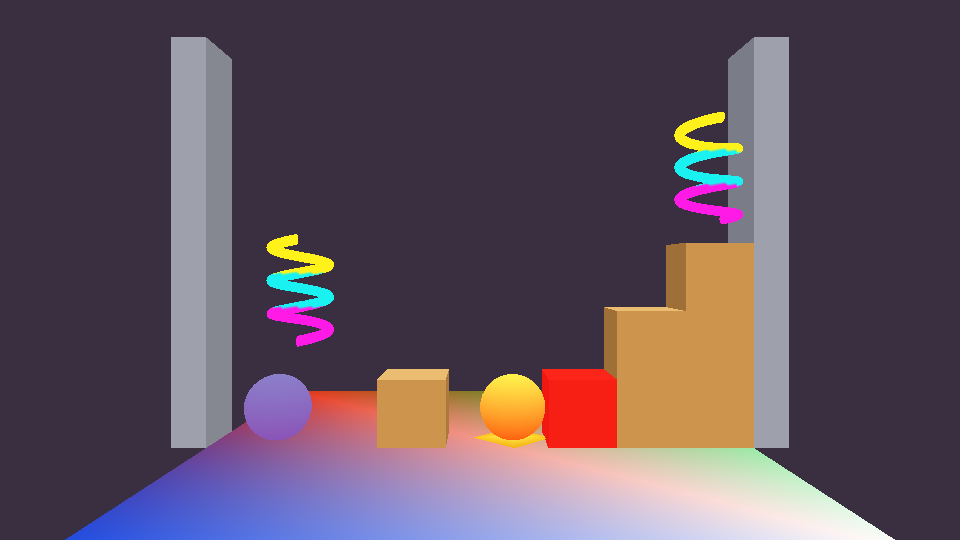
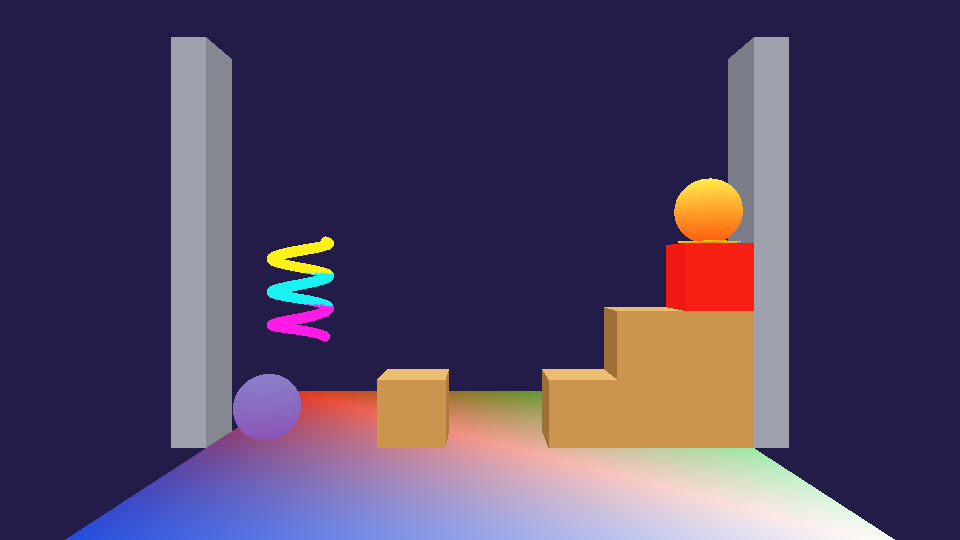
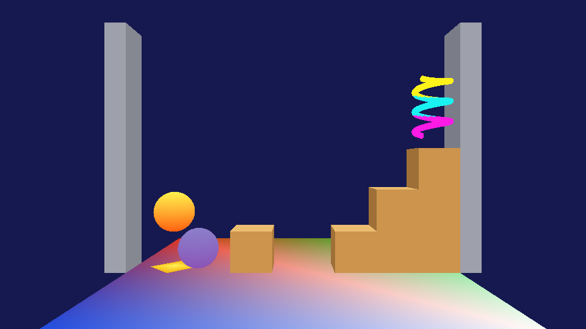
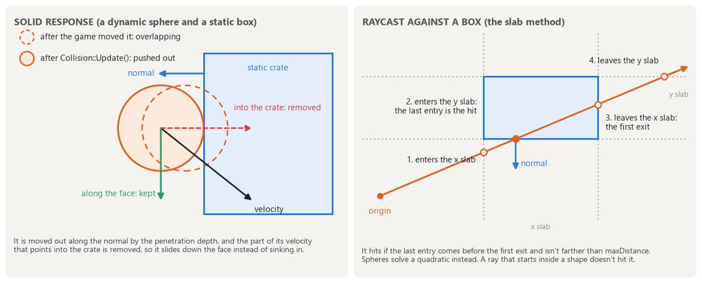

Engine System Update #2: Collision
Solid objects now stop each other, raycasts work, MyGame is a small platformer built on both, and the first version of the user guide is written
MyGame.exe. ESC closes the game. The left and right arrow keys move the orange ball (the player), and the up arrow or SPACE jumps, but only while a raycast says that it is standing on something. W/A/S/D move the camera and Q/E turn it. Every touch that starts or ends is written to eae6320.log next to the exe.
Where the project is
My Engine System is a collision system: sphere and axis-aligned box colliders described in data files and attached to game objects, collision layers that decide what can touch what, and events that tell the game when colliders start touching, keep touching and stop touching (that much was Update #1). Since then the system keeps solid objects out of each other and answers raycasts, MyGame has become a small platformer that is built on both, and the first version of the user guide is written. This is what my proposal planned for this update:
| Planned for Update #2 | Status |
|---|---|
| Solid response and velocity correction | Done. A dynamic collider is pushed out of a static one, two dynamic ones are pushed apart equally, and the velocity that points into the surface is removed. Triggers never push and are never pushed. |
| Triggers and the layer table | Already done in Update #1. Raycasts now filter by layer too. |
| Raycasts | Done. Spheres (a quadratic) and boxes (the slab method), a layer mask, triggers only if asked for, and the closest hit with its collider, point, normal and distance. |
| The MyGame demo | Done. Walls, a floor and steps of crates stop the player, a raycast decides whether it can jump, the coils are pickups (triggers), and an enemy patrols with a raycast and reacts to the player through events. |
| First version of the user guide | Done. Engine/Collision/UserGuide.md is part of the Collision project, and it is also online (link at the top). |

The demo







This is the beginning of the log from the run in the knockback screenshot (the player jumped over the fence crate into the pen). The system writes the layers when it starts. The rest comes from MyGame's event functions and its raycasts:
Collision: initialized with 4 layers from "data/Collision/game.binlayers"
Collision: layer 0 "world" touches: player, enemy
Collision: layer 1 "player" touches: world, enemy, pickup
Collision: layer 2 "enemy" touches: world, player
Collision: layer 3 "pickup" touches: player
The application was successfully initialized
MyGame: the patroller's raycast hit the fence crate 0.60 units ahead, so it turned around
Collision: the player started touching the floor (normal +0.00 +1.00 +0.00, depth 0.100 before it was pushed out)
MyGame: the patroller's raycast hit the left wall 0.60 units ahead, so it turned around
Collision: the player stopped touching the floor (OnStay was called 79 times in between)
Collision: the player started touching the fence crate (normal +1.00 +0.02 +0.00, depth 0.000 before it was pushed out)
Collision: the player stopped touching the fence crate (OnStay was called 2 times in between)
MyGame: the patroller's raycast hit the fence crate 0.60 units ahead, so it turned around
Collision: the player started touching pickup 1 (above the pen) (normal +1.00 +0.00 +0.00, depth 0.047 before it was pushed out)
MyGame: the player collected pickup 1 (above the pen) (1 collected so far)
Collision: the player stopped touching pickup 1 (above the pen) (OnStay was called 0 times in between)
Collision: the player started touching the patroller (normal +0.77 +0.64 +0.00, depth 0.054 before it was pushed out)
MyGame: the patroller knocked the player back and turned around
MyGame: the patroller's raycast hit the left wall 0.60 units ahead, so it turned around
Collision: the player stopped touching the patroller (OnStay was called 0 times in between)
Collision: the player started touching the patroller (normal +0.46 +0.89 +0.00, depth 0.016 before it was pushed out)
MyGame: the player landed on the patroller and bounced off
Collision: the player stopped touching the patroller (OnStay was called 0 times in between)The depths are now "before it was pushed out". Falling onto the floor at about 7 units per second sinks about 0.1 units into it in one update (MyGame updates its simulation 60 times a second now), and the push takes all of it out again. The touch with the fence crate's side has a depth of 0 because the player walks exactly 0.05 units per update and happened to stop right at the face. The patroller sees the wall and the crate at 0.60 units, its radius plus the 0.1 units that it looks ahead. The two touches with the patroller show the threshold in the player's OnEnter. The first normal, (0.77, 0.64), doesn't point up enough (0.7 is the threshold), so it counted as a hit from the side. The second, (0.46, 0.89), was a landing on its head.
Solid response
Collision::Update() has one new step, between finding the pairs that touch and sending the events:
- Remove the colliders that the game has released, sending OnExit to whatever they were still touching (unchanged from Update #1).
- Find every pair that touches (unchanged): pairs that are disabled, both static, or in layers that don't interact are skipped without any math, the bounding boxes reject most of the rest, and the exact test gives a normal and a depth.
- New: resolve the overlaps. For every touching pair where neither collider is a trigger, the dynamic collider(s) are moved apart and their velocities corrected (below).
- Compare with the previous update and send the events (unchanged): all the exits, then the enters, then the stays. The contacts still say how deep the colliders were before they were pushed apart.
- Remove the colliders that were released from inside an event (unchanged).

The rules come from my proposal. A collider is dynamic unless it is static, and solid unless it is a trigger:
- Dynamic and static: the dynamic collider is moved all of the way out along the contact normal by the penetration depth, and the part of its velocity that points into the static collider is removed. The rest of the velocity is kept, so it slides along walls, and it can always move away from a surface (jumping off a floor).
- Dynamic and dynamic: each is moved half of the way, and the speed at which they were approaching each other is taken from both equally. That is what two objects with the same mass that don't bounce would do, and it keeps the system free of masses and materials, which my proposal left out on purpose.
- Triggers never push anything and are never pushed. Their events are sent as before.
// cWorld.cpp, ResolveOverlaps(): called by Collision::Update() with every pair that touches
// (solidPairs are the ones where neither collider is a trigger)
for ( unsigned int passIndex = 0; ( passIndex < s_maxResolutionPassCount ) && !solidPairs.empty(); ++passIndex )
{
bool wasAnythingMoved = false;
for ( const auto& pair : solidPairs )
{
// The overlap is found again from where the colliders are now (an earlier pair might have moved one of them)
Math::sVector normal; // (from b toward a)
float penetrationDepth;
if ( !Intersections::DoShapesTouch( GetShape_world( *pair.a ), GetShape_world( *pair.b ), normal, penetrationDepth ) )
continue;
auto& rigidBody_a = pair.a->GetRigidBody();
auto& rigidBody_b = pair.b->GetRigidBody();
if ( pair.b->IsStatic() )
{
// Only a moves: all of the way out, and it can't keep moving into b
rigidBody_a.position += normal * penetrationDepth;
RemoveVelocityIntoSurface( rigidBody_a.velocity, normal );
}
else if ( pair.a->IsStatic() )
{
rigidBody_b.position -= normal * penetrationDepth;
RemoveVelocityIntoSurface( rigidBody_b.velocity, -normal );
}
else
{
// Both are dynamic: each moves half of the way, and their approaching speed is taken from both equally
const auto halfOfTheCorrection = normal * ( penetrationDepth * 0.5f );
rigidBody_a.position += halfOfTheCorrection;
rigidBody_b.position -= halfOfTheCorrection;
const auto approachingSpeed = Math::Dot( rigidBody_a.velocity - rigidBody_b.velocity, normal );
if ( approachingSpeed < 0.0f )
{
const auto halfOfTheVelocityChange = normal * ( approachingSpeed * 0.5f );
rigidBody_a.velocity -= halfOfTheVelocityChange;
rigidBody_b.velocity += halfOfTheVelocityChange;
}
}
if ( penetrationDepth > 0.0f ) wasAnythingMoved = true;
}
// Once a pass doesn't move anything every overlap has been resolved
if ( !wasAnythingMoved ) break;
}
// RemoveVelocityIntoSurface(): moving away from the surface or along it is left alone
const auto speedAlongNormal = Math::Dot( io_velocity, i_normal );
if ( speedAlongNormal < 0.0f )
io_velocity -= i_normal * speedAlongNormal;Decisions
- Why the velocity has to change too: if only the position were fixed, gravity would keep adding speed to a ball resting on the floor, and our render-time extrapolation (
PredictFutureTransform()) would draw it sinking into the floor between updates. With the correction a resting ball has a vertical velocity of exactly 0 after every update. A unit test drops a ball for two seconds and checks that it ends up at exactly the floor's height, still moving sideways at the speed it started with. - Corners: a ball in a corner touches the floor and a crate at once, and moving it out of one can move it into the other. The overlaps are therefore resolved in up to four passes, each time from where the colliders are after the last pass, and it stops as soon as a pass moves nothing. A unit test pushes a ball into the corner between the floor and a crate and checks that it ends up touching both and overlapping neither.
- When the events are sent: after the response, so that an event function sees where its object really is now, but with the contact from before it, so that the depth still says how far the objects had sunk into each other. An object resting on another one stays "touching" because of the 0.001-unit tolerance from Update #1, so it gets OnStay every update instead of flickering between OnEnter and OnExit.
- Nothing else is touched: only the rigid body's position and velocity change, never its acceleration or orientation. The game still moves its objects however it wants, and a static collider that the game moves (a door, a moving platform) still pushes dynamic colliders out of its way.
- Tunneling: detection still only happens once per simulation update, which my proposal listed as a risk. It is documented in the header and the guide. MyGame avoids it in three ways. It updates its simulation 60 times a second instead of 15 (
GetSimulationUpdatePeriod_inSeconds()is overridden). It never lets the player fall faster than 12 units per second, which is 0.2 units per update. And the floor's collider is now a whole unit thick.
Raycasts
// Collision.h
struct sRaycastHit
{
cCollider* collider = nullptr; // the closest collider that the ray hit (valid until the next Update())
Math::sVector point; // where the ray entered it
Math::sVector normal; // the surface's unit normal there, pointing back toward the side the ray came from
float distance = 0.0f; // how far the point is from the ray's origin
};
bool Raycast( const Math::sVector& i_origin, const Math::sVector& i_direction, const float i_maxDistance,
sRaycastHit& o_hit, const uint32_t i_layerMask = ~uint32_t( 0 ), const bool i_shouldTriggersBeHit = false );The direction can have any length except 0 (it is normalized). Only colliders whose layer is in the mask can be hit, so Collision::GetLayerMask( "world" ) finds only walls and floors. The layers file's interactions don't matter here. Disabled colliders, triggers (unless asked for) and colliders that the game has already released are skipped. A ray that starts inside a collider doesn't hit that collider, so a ray cast from an object's center never hits its own collider (my ground check relies on that). Raycast() changes nothing, so it can be called at any time after Initialize(), even from inside an event, and o_hit is only written when something was hit. Every collider is tested, and each test only looks as far as the closest hit found so far.
- Spheres: a point on the ray is on the sphere when its distance from the center is the radius, which is a quadratic in the distance along the ray (with a unit direction its first coefficient is 1). A ray that starts inside the sphere or points away from it is rejected before the square root. The smaller root is where the ray enters, and the normal points from the center through that point.
- Boxes: the slab method (the figure above). For each axis the ray enters and leaves the space between the box's two planes. It is inside the box after the last of the three entries and before the first exit, so it hits if the last entry comes before the first exit and isn't farther away than maxDistance. The axis of the last entry gives the face, and the normal is that face's. A ray parallel to a slab is either always inside it or never.
Using it from a game
This is how MyGame uses the new parts (shortened). The names and numbers are MyGame's, but the patterns (a look-ahead ray, a ground check, a trigger that disables itself, reacting to the contact normal) work in any game:
// cMyGame::UpdateSimulationBasedOnTime() (shortened)
// 1. The patroller looks ahead, only at the "world" layer, and turns around before it bumps into anything
Collision::sRaycastHit hit;
if ( Collision::Raycast( patroller.position, Math::sVector( m_patrollerDirection, 0.0f, 0.0f ),
s_patrollerRadius + 0.1f, hit, m_layerMask_world ) )
{
m_patrollerDirection = -m_patrollerDirection;
}
patroller.velocity = Math::sVector( m_patrollerDirection * s_patrollerSpeed, 0.0f, 0.0f );
// 2. Everything moves as usual (the player's acceleration is gravity); then the collision system
// pushes the player out of whatever it moved into and sends the events
m_object_player.Update( i_elapsedSecondCount_sinceLastUpdate );
m_object_patroller.Update( i_elapsedSecondCount_sinceLastUpdate );
Collision::Update();
// 3. The ground check: one ray straight down finds the world under the player
if ( Collision::Raycast( player.position, Math::sVector( 0.0f, -1.0f, 0.0f ), 50.0f, hit, m_layerMask_world ) )
{
m_isPlayerOnGround = hit.distance <= ( s_playerRadius + 0.05f );
m_object_marker.rigidBodyState.position = hit.point + Math::sVector( 0.0f, 0.03f, 0.0f );
}
// cMyGame::UpdateSimulationBasedOnInput(): jumping is only possible on the ground
if ( m_isPlayerOnGround && ( UserInput::IsKeyPressed( UserInput::KeyCodes::Up ) || UserInput::IsKeyPressed( UserInput::KeyCodes::Space ) ) )
m_object_player.rigidBodyState.velocity.y = s_jumpSpeed;
// A pickup's OnEnter (pickups are triggers in "pickup", and only "player" interacts with that layer)
pickup.collider->OnEnter = [this, &pickup, i_pickupIndex]( const Collision::sContact& )
{
pickup.isVisible = false;
pickup.collider->SetEnabled( false ); // nothing can touch it until it comes back
m_secondCount_untilPickupRespawns[i_pickupIndex] = s_pickupRespawnDelay;
};
// The player's OnEnter, when the other collider is the patroller
// (the contact's normal points from the patroller toward the player)
if ( i_contact.normal.y >= 0.7f )
{
velocity.y = s_bounceSpeed; // it landed on the patroller's head
}
else if ( m_secondCount_hurtLeft <= 0.0f )
{
// hit from the side: knocked back, away from the patroller, which turns around
const auto awayFromThePatroller = ( i_contact.normal.x >= 0.0f ) ? 1.0f : -1.0f;
velocity = Math::sVector( awayFromThePatroller * s_knockbackSpeed_sideways, s_knockbackSpeed_up, 0.0f );
m_patrollerDirection = -awayFromThePatroller;
m_secondCount_hurtLeft = s_hurtDuration; // drawn red for half a second
}The demo's data files changed a little: the floor's collider is thicker, there is a wall collider for the two new walls, and the spinner from Update #1 became the pickup collider that both pickups load. The layers file is the same as in Update #1 apart from its comments. The new wall mesh and the marker mesh are human-readable mesh files like the cube.
-- Colliders/floor.collider: a whole unit thick now (it was 0.1 in Update #1), with its top at the floor mesh's plane
return
{
shape = "box",
halfSize = { x = 4.0, y = 0.5, z = 4.0 },
center = { y = -0.5 },
layer = "world",
isStatic = true,
}
-- Colliders/wall.collider: matches the new 0.5 x 6 x 1 wall mesh (one at each end of the floor)
return
{
shape = "box",
halfSize = { x = 0.25, y = 3.0, z = 0.5 },
layer = "world",
isStatic = true,
}
-- Colliders/pickup.collider: the spinning coil from Update #1, now used by both pickups
return
{
shape = "box",
halfSize = { x = 0.55, y = 0.85, z = 0.55 },
layer = "pickup",
isTrigger = true,
isStatic = true, -- (it turns, but an axis-aligned box that encloses it doesn't change)
}The user guide (first version)
The guide is in Engine/Collision/UserGuide.md, which is part of the Collision project so that it shows up in Visual Studio next to the headers. It is also online at the link at the top of this page. It is written for a classmate who has never seen the system:
- The two projects and what each one is for.
- Setting up a solution: adding the projects, the reference from the game, and BuildMyGameAssets' dependency on ColliderBuilder.
- What to add to AssetBuildFunctions.lua (the whole block, ready to paste), and why the colliders depend on the layers file.
- The layers file and collider files, with every key in a table and what ColliderBuilder checks.
- AssetsToBuild.lua, and where the built files end up.
- Using it in a game: Initialize(), loading and attaching colliders, Update(), CleanUp(), reference counting, and the rule that a rigid body must not move in memory.
- Events (what a contact contains, their order, what may be done inside one), raycasts (with a ground check and a line-of-sight example) and how the response works, with tips for walls, moving platforms and player input.
- Limits and troubleshooting: tunneling and how to avoid it, boxes that don't rotate, the number of layers, and a table of "my objects pass through each other"-type problems with what to check.
The header comments were updated as well. Collision.h explains the three things that Update() does and has a raycast example, and cCollider.h has a new RESPONSE section.
Testing
- 89 unit tests (up from 42), built against the Debug library. There are 12 overlap tests from Update #1 and 14 new ray tests against single shapes: hits with the right distance and normal, a diagonal ray that enters a box through the face it reaches last, misses, rays that start inside or exactly on a shape, rays that point away, and max distances that are too short. The other 63 test the system, including raycasts against the world: the closest collider wins, layer masks (also combined with |), triggers only when asked for, a ray from inside an object's own collider, disabled and released colliders, and a non-unit direction. For the response: pushed out with the velocity corrected, a ball falling onto the floor with gravity, two dynamic spheres sharing the push and the speed, a ball in a corner, and triggers, disabled colliders and layers that don't interact not pushing. All pass. Where the Update #1 tests expected objects to stay inside each other, they now expect them to be pushed out.
- The tests now build their own copies of the Update #1 data files with ColliderBuilder, so the demo's data can change without breaking them.
- All four configurations (Debug/Release, x64/x86) build from an empty temp/ folder with no errors and no warnings. Building only the game and running it shows "Initialization failed!" and exits with code 1 (the first file it can't find is the layers file). After building BuildMyGameAssets it runs. Both ZIPs were unzipped and run on their own.
What is left for the final week
The presentation is on Monday, November 16, and the final write-up is due on Thursday, November 19. What is left:
- The download for classmates: a ZIP with the Collision and ColliderBuilder projects, the AssetBuildFunctions.lua block and example data. I will test the guide's setup steps by following them myself in a clean copy of my Assignment 08 solution, which has never had the collision system.
- Finishing the user guide with whatever that test and anyone who tries the system runs into, and putting it with the final write-up.
- The presentation: the demo, what a classmate has to do to use the system, and how it follows what we did for graphics (human-readable data, a builder that writes binary files, a platform-independent static library with reference-counted assets).
- Known limits to explain clearly, rather than fix this week: tunneling for very fast objects, dynamic pairs being treated as equal masses, and a single-ray ground check missing ledges where only the edge of the ball rests on a crate.
- If there is time, small additions from my stretch goals: an overlap query ("which colliders are inside this sphere?", e.g. for explosions) and a broad phase, if anyone's game needs a lot of colliders.